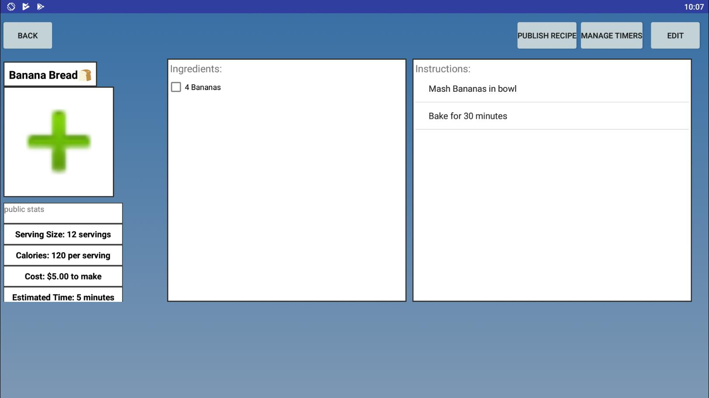
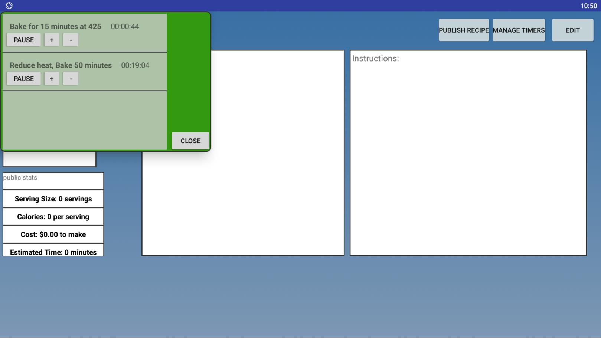

Your Kitchen
For a term project in a Mobile Programming course,
I along with two partners made an android application
that aims to have a fully customizable recipe book on your phone,
while also providing extra functionality beyond that offered by other apps.
Users can also upload their recipes, allowing others to view and download them.
All recipes can be given tags such as “quick”, “breakfast”, “vegetarian”, etc.
that users can use to both search for new recipes on the server and to navigate
through the recipes they have stored on their phone. Each recipe is stored as an object
that has data such as a title, ingredients, etc. When looking at a recipe, users
can check off ingredients that they have enough of.
For this project I contributed the local and servside database system that
allowed users to download edit and share recipes. I implemented this using
Google Firbase's realtime database system and stored recipes as JSON objects
to easily transfer objects back and forth between Firebase and a locally
stored SQLite database that holds users downloaded and created recipes.

